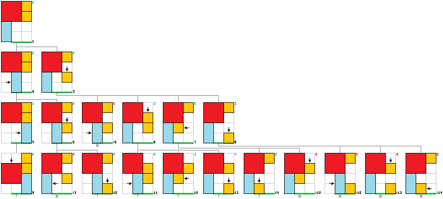

Classic configuration – the red 2 × 2 block (indexed by 4) must find the way from the top to the middle-bottom:
|
→ |
|
|||||||||||||||||||||||||||
Iterative solver. It consequtively draws all possible block configurations until the one in which the red block (a warlord) is on the final destination.
Simple example of a 3 × 4 board with four blocks (two units, one 2 × 1 and the warlord). The warlord must be set on the bottom-right corner (thick green line)

In the initial position []1 only two []2 blocks can move: 2 × 1 – rightward or 1 × 1 – downward. Thus the second line consists of two diagrams. The loop turns again and the offset with current board configuration bumps by one. So, on the second board []2 we have two movable blocks in two []2 directions (note that we do not count draw-backs). In the next turn of the loop we are in the third offset position and, on the third []3 board, we have three movable blocks in four []4 directions. However, one movement leads to the repeated configuration – same as in the diagram number []5, generated out of the diagram []2. Such repetitions are ignored in future turns. The procedure repeats until the warlord is found on the green line – in this case it takes 72 steps which can be reduced to 10 by the sieve.
Note that the step counter depends on the counting method. Here we assume that if block moves two positions, say, downward then it takes 2 steps rather than 1. Hence, some could say that the board above could be solved in just 6 steps...
2015 • 08 • 20 • wojciech bruzda